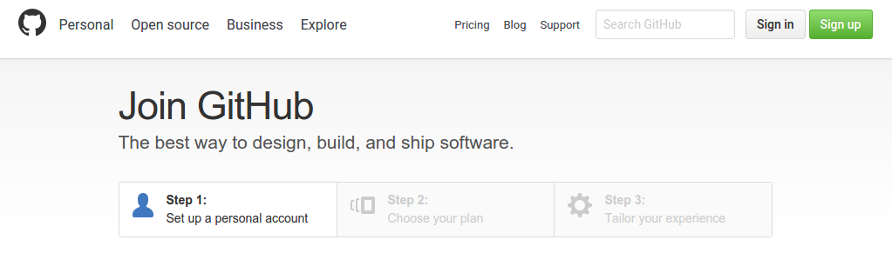
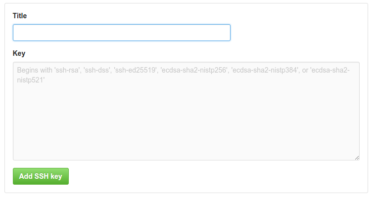

Git
Es un software de control de versiones, se creo pensando en la eficiencia y la confiabilidad del mantenimiento de versiones de aplicaciones cuando éstas tienen un gran número de archivos de código fuente.
Cómo instalar Git
Distribución basada en Debian (Ubuntu, por ej)
apt-get install git
Distribución basada en Fedora
yum install git-core
En Mac
http://sourceforge.net/projects/git-osx-installer/
En Windows
https://git-scm.com/download/win
Ordenes básicas
Para añadir un fichero o varios al control de versiones
git add [ <Nombre-del-fichero> o una expresión regular ]
Para confirmar los cambios realizados
git commit -m "Nombre del commit"
Mostrar el estado actual de la rama , con los cambios que hay que guardar
git status
Respecto a las ramas
Listar todas las ramas locales:
git branchListar tanto las ramas locales como las remotas
git branch -aCrear una nueva rama
git branch <Nombre-de-rama>Eliminar una rama
git branch -d <Nombre-de-rama>
Para irnos a una rama
git checkout <Nombre-de-rama>
Para guardar los cambios desde la rama locar "origin" a la rama "Nombre-de-rama"
git push origin <Nombre-de-rama>
Para traer a local los cambios realizados en el repositorio remoto
git fetch
Mezcla en la rama en la que te encuentras parado, los cambios de la rama "Nombre-de-rama"
git merge <Nombre-de-rama>
Unifica los comando fetch y merge en un único comando respecto a un repositorio a la rama local
git pull <Nombre-de-rama-remota>
GitHub
Github es una plataforma de desarrollo colaborativo para alojar proyectos utilizando el sistema de control de versiones Git. Utiliza un framework llamado Ruby on Rails creado por GitHub, Inc.
El primer paso para acceder a GitHub es crear una cuenta.

A continuación se adjunta el enlace que lleva directamente a la creación de una cuenta en GitHub:
Una vez creada la cuenta podremos incluir todos nuestros repositorios desde la página web de GitHub y empezar a trabajar con ellos clonándolos en una consola por ejemplo.
Otra alternativa para manejar todos nuestros repositorios con sus archivos es instalar la aplicación de escritorio de Github, disponible para Windows y Mac. Además también existen versiones para los usuarios de Linux en forma de software libre.
El siguiente enlace lleva a la página de descarga de GiHub Desktop:
Desde esta aplicación se puede manejar de forma gráfica nuestros repositorios, así como sus ramas y ficheros.
Una vez creada nuestra cuenta, debemos sincronizar nuestro equipo local con nuestra cuenta de GitHub. Para ello debemos ejecutar en una terminal el siguiente comando para generar las claves privadas y públicas:
ssh-keygen -t rsa
Este comando, nos generará una clave privada y otra pública, en nuestro directorio /.ssh .Una vez tengamos las claves generadas, añadimos la clave pública a nuestra configuración SSH en GitHub. Para ello, accedemos a nuestro directorio /.shh y copiamos el contenido de nuestro fichero id_rsa.pub. A continuación, entramos en nuestro perfil de GitHub y nos dirigimos al apartado de Settings. Dentro de Settings, entramos en el subapartado de SSH and GPG keys. Es en éste último apartado donde debemos copiar nuestra clave pública y el nombre con el que queramos guardar nuestra máquina.
Por lo tanto el camino completo sería: Perfil -> Settings -> SSH and GPG keys

Hub
Hub es una herramienta de línea de comandos que implementa funcionalidades adicionales a las que proporciona git, con el fin de ampliarlo y darle más utilidades. Está completamente integrado con git, por lo que puedes ejecutar sus funcionalidades escribiendo git comando-a-realizar.
Su instalación es sencilla ya que se puede instalar a través de brew:
brew install hub
Funcionalidades a destacar
git create [nombre] [-p] [-d descripición] [-h páginadeinicio]
Crea un repositorio público en la cuenta actual de GitHub y añade el remoto origin.
git browse [-u] [[usuario/]repositorio] [subpágina]
Abre la página del repositorio en GitHub en el navegador por defecto del sistema.
git compare [-u] [usuario] [[comienzo...]final]
Abre una vista informativa de GitHub en el navegador por defecto. Comienzo y final marcan el rango de historia en el cual se quiere consultar la información.